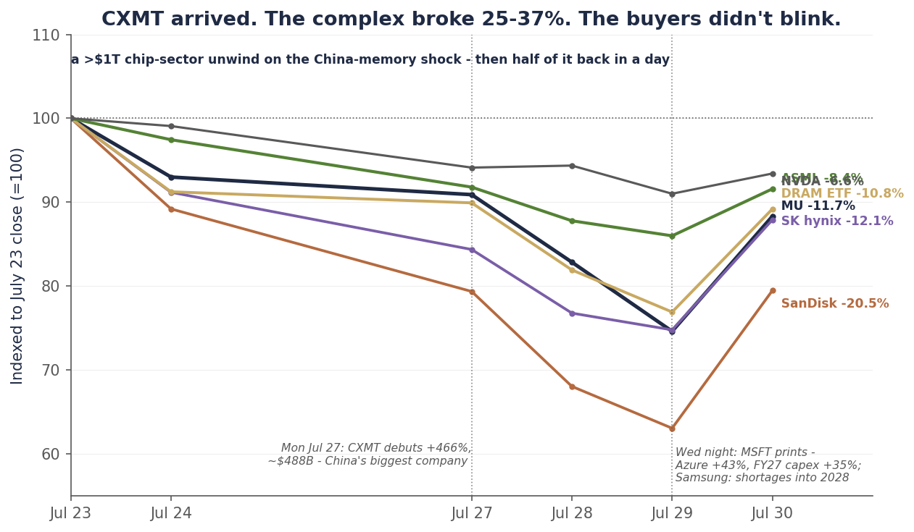

Single-name update · Memory · The close
Micron broke $900 again. This time the order was already there.
- The call: CLOSED — long from ~$668 (May 6) to the final exit (July 27–28); twelve weeks, no position remaining
- Final ledger: ~+53% blended, all realized — ~60% booked at ~$1,100 (+65%); ~40% runner out at ~$900 (+35%)
- The exit: a pre-placed broker stop at $900 — the repair from the July 21 note — executed into the July 27–28 breakdown, no human in the loop
- Remaining book: ASML (ACCUMULATE) — the published add-zone traded this week · DRAM basket (held, marked below)
- Next: the capex-week verdict · the China-memory question CXMT just forced · where the next dollar goes — MU re-entry triggers stand, in monitoring
On Monday, China’s ChangXin Memory — CXMT — began trading in Shanghai and rose 466% in a day, to roughly a $488 billion market value: instantly the most valuable listed company on the Chinese mainland. Over three sessions the global chip complex shed more than a trillion dollars of value. Micron, which had touched $1,000 the previous Thursday on Alphabet’s and Tesla’s capex reads, fell to $820.53 by Tuesday’s close and $739.00 by Wednesday’s — a $705.04 low — before today’s violent 18% rebound. SanDisk lost more than a third of its value from the July 23 close to the Wednesday trough. The DRAM basket fell 23%. Even ASML — green through the mid-July memory break — traded down into the add-zone our initiation published two weeks ago.
Our runner never saw the bottom. After the July 21 note — the one that graded our freeze an F and promised “a structure that doesn’t need us to” — that structure was built literally: a stop-loss order resting at the broker at $900. When Micron broke $900 in the July 27–28 breakdown, the order sold all 15 shares at approximately $900, with no decision, no debate, and no human in the loop. The position was flat before Tuesday’s $820.53 close ever fired the published $848.95 line, flat through Wednesday’s $705 low, and flat through today’s 18% rip — which is the first bounce in this entire saga that taunts nobody.
So the twelve-week Micron call is closed, and the final number is the poetry: ~+53% blended — ~60% booked near $1,100 for +65%, the ~40% runner out at ~$900 for +35% — which is, to the point, the exact “worst case” floor this coverage published on July 8. Never selling a share would sit at roughly +31% tonight. The system, run with one confessed failure and one mechanical repair, delivered precisely what it promised. This note grades the whole thing — the calls, the misses, the violation, the machine — marks what remains in the book, and closes single-name Micron coverage for now. The re-entry triggers stay live. The next notes belong to the referees and to the question CXMT just put on every memory model in the world.
Chart 1 — The whole call, closed
Twelve weeks: in at ~$668, ~60% booked near $1,100, one confessed freeze — and the runner taken out at ~$900 by an order that didn’t need us.
![MU daily closes from early May through July 30, 2026: entry near $668 on May 6, the run through the shaded $950-to-$1,200 scale-out zone to the June 25 record close of $1,213.56, the July decline with three red closes below $900 on July 16-20 marked as the freeze, then the July 27-28 breakdown where a green marker at $900 shows the pre-placed broker stop selling all 15 shares, the July 29 crash close at $739 with a $705 low as the CXMT selloff bottoms, and the July 30 rebound close — after coverage exited.](assets/reports/mu-close-2026-07-30-c1-call.png)
Daily closes, May 5–July 30, 2026. The $900 line was drawn June 23; we failed it manually in mid-July, then handed it to the broker on July 21. The order executed in the July 27–28 breakdown at ~$900 — the position was flat before the $848.95 close-line fired and flat at the $705.04 low. Source: bpleon price feed.
China arrived early
The week began as a victory lap. Alphabet’s and Tesla’s prints put enormous capex numbers on the tape, the Street’s Vera Rubin and NAND-shortage notes rolled in, and Micron tagged $1,000 on Thursday, July 23 — closing at $990.21, up 17% from the low close it had printed just six days earlier. The whipsaw machine we spent a month documenting was running at full amplitude, and the demand side of the story looked unimpeachable.
Then Monday happened. CXMT — ChangXin Memory Technologies, China’s DRAM champion — debuted on Shanghai’s STAR Market in a listing Bloomberg put near $10 billion, and the shares rose 466% in a single session, from ¥8.66 to ¥49, valuing the company around ¥3.3 trillion — roughly $488 billion, past ICBC as the most valuable listed company on the mainland, on subscription demand reported at hundreds of times the offering. Within a day, US press reported a Capitol Hill inquiry into how far Chinese memory has actually advanced. That is the question that broke the complex — because a $488 billion CXMT is the market pricing Chinese DRAM not as a 2028 threat but as a present-tense industrial fact, arriving years ahead of the export-control schedule Washington assumed and the supply models Wall Street was using.
What followed was the largest unwind of the cycle: more than $1 trillion came off global chip stocks in three sessions. Micron fell 8.9% Tuesday to $820.53 and another 9.9% Wednesday to $739.00; SanDisk collapsed 37% from the July 23 close to Wednesday’s trough; SK hynix’s ADR fell back below its debut price; the DRAM basket printed $44.85. And here is the part that matters for the record: this was our re-underwrite’s supply branch, a third time, at national scale. In July we watched the market sell record earnings because tools become wafers. This week it sold the complex because a country becomes wafers. The demand story never broke — Microsoft’s Wednesday-night print showed Azure up 43% crossing $100 billion, fiscal-2026 capex framed near $190 billion with roughly $25 billion of it attributed to higher component costs (memory chief among them — our thesis, visible inside Microsoft’s own budget), and Samsung followed with final results showing its chip profit up more than 250-fold off last year’s collapsed base, multi-year supply agreements with datacenter customers, and a warning that shortages extend “into 2028.” The buyers did not blink. The market’s answer today was a 16–26% single-day rip across the memory complex.
Chart 2 — The CXMT week
From the July 23 top: a 25–37% break across the complex on the China shock — then half of it back in a single session once the spenders reported.

Closing prices indexed to July 23, 2026 (=100), through July 30. Verticals mark CXMT’s July 27 debut and Microsoft’s July 29 evening print. Source: bpleon price feed; CXMT debut figures via CNBC/Fortune/US News; the >$1T sector loss via CNBC.
Hold both halves of that picture at once, because the next year of memory investing lives in the space between them. Demand: hyperscaler budgets are still growing 30%-plus, memory inflation is now a named line item inside Microsoft’s capex, and the industry’s largest player just told the world shortages run into 2028. Supply: the market just assigned half a trillion dollars to the proposition that China’s memory industry is real, funded, and early. Both can be true. That tension — not Micron’s next quarter — is now the central question of the complex, and it is a sector question, which is one more reason this coverage closes where it does: the basket and the toolmaker carry it from here.
The order was already there
Nine days ago this coverage published its most uncomfortable note: the $900 rule had fired and we froze — an F on process, graded in public. The repair we promised was specific: “not a promise to do better, but a structure that doesn’t need us to.” Here is what that sentence meant in practice: a stop-loss order, resting at the brokerage, at $900 — the original June line, the level our published discipline had already failed once. Not a note-to-self. Not a rule we’d re-promise to obey. An instruction to a machine that does not read headlines, does not remember that TrendForce raised forecasts, and does not get one more session to think about it.
On Monday and Tuesday, as the CXMT shock took Micron back down through $900 — Monday’s close grazed $900.20; Tuesday broke it for good — the order did the only thing it knows how to do. All 15 shares, out at approximately $900. The published $848.95 close-line, the one we staked the site’s risk credibility on, fired at Tuesday’s $820.53 close — against a book that was already empty. The deadline commitment — a re-underwritten hold case or an exit “regardless of price” by the capex prints — is satisfied by this note, inside the window, with the exit already done. Every promise the July 21 note made, kept — none of them by willpower.
Two honest observations belong on the record. First: a broker stop is an intraday instrument, and our published system was deliberately a closing-price system — we wrote in June that intraday pierces don’t count, and that choice was correct for two months, surviving one intraday pierce that closing discipline rightly ignored. Handing the exit to an intraday order was a change, and it traded precision for certainty: it will sometimes sell a shakeout the closing rule would have survived. After July’s lesson, that trade was the point. The weak component in this system was never the line — it was the human at the moment of execution, and the repair removed the human. Second: today Micron ripped 18% off the bottom, and for the first time in this whole twelve-week story, a violent bounce taunts no one. The book didn’t freeze through it, didn’t chase it, doesn’t own it. It is somebody else’s whipsaw now. That feeling — watching an 18% move with a closed ledger and a flat pulse — is what the discipline was buying all along.
The final ledger
Now it can be graded, because now it is over — every leg realized, nothing marked, nothing open. Coverage began May 6 at ~$668 with a $1,100 target the Street called aggressive. The stock ran 82% to the June 25 record; ~60% of the position was sold into the pre-planned $950–$1,200 scale-out at a ~$1,100 average (+65%, banked in June while KeyBanc printed $1,750 and Cantor $2,000). The ~40% runner survived a crash, a confession, and a $1 trillion unwind, and exited at ~$900 (+35%). Blended: ~+53% in twelve weeks. The reference cases, so the number means something: never selling a share sits at roughly +31% tonight. The published $848.95-close rule, honored mechanically, would have exited the runner near $800 at Wednesday’s open — roughly +47% blended. And the “worst case” this coverage printed on July 8 — ~60% at ~$1,100, the runner stopped at $900, ~+53% blended — is, to the digit, what the system finally delivered. The floor the discipline promised in writing three weeks ago is the number on the tombstone.
Chart 3 — The final ledger
Both legs realized, the call closed at ~+53% — landing exactly on the worst-case floor published July 8, and 22 points above never selling.
![Horizontal bar ledger of the closed Micron call, all returns against the $668 coverage basis: the roughly 60% booked through the scale-out returned about +65% realized; the roughly 40% runner sold by the broker stop at about $900 on July 27-28 returned about +35% realized; the final blended call is about +53%, drawn solid and closed. A hatched ghost bar shows never selling and holding to tonight's close at about +31%, and a dotted vertical line at +53% marks the worst case published July 8 — the exact floor the system promised, which the final bar lands on.](assets/reports/mu-close-2026-07-30-c3-ledger.png)
All legs vs. the ~$668 May 6 coverage basis, fully realized. The dotted line is the “worst case ~+53%” printed in the July 8 note — the final blend landed on it. Source: bpleon research.
The twelve weeks, graded final — both columns, one last time:
- Right: the boom, early. Long at $668 in May, before the FQ3 blowout, the $100B contract framework, and the run to $1,213. The variant view paid for every mistake that followed.
- Right: the scale-out. ~60% sold into strength at ~$1,100 while the Street’s targets climbed toward $2,000. It banked the win before the storm and is the single reason every later error was survivable.
- Right: flows, not fundamentals. The Korean ETF unwind, the US ETF launch, the analyst-note whipsaws, and now a $1T sector unwind half-retraced in a day — the tape spent three months proving the thesis that price and information are different things.
- Right, uncomfortably: the supply branch. The re-underwrite’s core caution — that supply answers demand booms, through SCA ceilings, through tool orders, eventually through China — kept the target at the Street’s low end all the way up. CXMT at $488 billion is that argument at a scale we did not predict arriving this early — right thesis, early timeline, and we’ll take it.
- Wrong: the June direction call. “Priced, likely to fade” — it ripped 16%. Owned in June, owned now.
- Wrong: the ASML either/or. A full backlog was supposed to lift memory multiples; it de-rated them, because the boom’s invoice is memory’s future supply. The framing miss that taught the supply lesson properly.
- Wrong, and repaired: the freeze. The stop fired July 16 and we didn’t sell — an F on process that luck bailed out. The repair — the broker order — executed twelve days later without us. The F stands on the record; so does the fix that made it unrepeatable.
What remains, and where coverage goes
The book that continues: ASML, where this week did something the initiation planned for — the published $1,550–$1,650 add-zone traded for the first time, on Tuesday and Wednesday, before today’s bounce lifted it back out. The initiation’s framework (ACCUMULATE, probability-weighted ~$2,000, add on weakness, don’t chase) now faces its first live add decision, and it deserves its own note rather than a paragraph here — the CXMT question cuts for ASML in one direction (China’s buildout needs tools too, where export rules allow) and against the whole complex in another (a supply war compresses everyone’s customers). And the DRAM basket, held from $59.73, marked tonight at $52.00 — underwater roughly 13%, having traded 25% below basis at Wednesday’s low. We hold it, and we owe it honesty: the basket was built to own the un-capped winners of a shortage, and CXMT just put a second question under that thesis — whether the shortage’s duration survives China’s ramp. That question gets underwritten properly in the sector work, not assumed away.
On Micron itself: coverage closes with no position, and the re-entry triggers published July 21 stand, now with a fourth added — (1) HBM4 re-qualification at Nvidia at scale; (2) FQ4 (~late September) realized ASPs proving the SCA ceilings looser than modeled; (3) a genuine washout toward the 200-day (mid-$500s — Wednesday’s $705 got closer than we expected this quarter); and now (4) a real underwriting of CXMT — any future Micron long must price Chinese supply explicitly, because the market just told us it will. Until one of those triggers, Micron is a name we watch with the discipline’s coldest instrument: no position, no itch, a written list of what would change our mind.
And the next notes, since a closing piece owes the reader a direction: the referee week finishes tonight — Amazon and Apple complete the capex picture Alphabet, Microsoft, and Meta started — and the weekly will tally the verdict for the whole AI-infrastructure book. Then coverage opens the question this exit funds: where the next dollar goes. The cash this call returned is the largest the book has held since May, the whole portfolio remains one concentrated bet on AI capex, and the deployment work — the diversifiers, the power lane, the un-crowded expressions — has been researched for a month and published never. That series starts next. The memory war will keep getting covered — through the basket, the toolmaker, and the CXMT question that just made it a geopolitical story. The single-name chapter closes here, at +53%, with the machine having the last word. It said: sold.
| Item | Status |
|---|---|
| As of | July 30, 2026 close |
| Micron | COVERAGE CLOSED — NO POSITION. Final: ~+53% blended, twelve weeks, all realized (~60% @ ~$1,100, +65%; ~40% @ ~$900 via broker stop, Jul 27–28, +35%) |
| The July 21 commitments | $848.95 close-line: fired Jul 28 against an already-flat book (exit preceded it, higher) · Capex-print deadline: satisfied by this note, in-window, exit done |
| The week | CXMT +466% debut (~$488B, Jul 27) · >$1T sector unwind · MU $990.21 → $705.04 low → +18% today · MSFT: Azure +43%, ~$25B of capex is component-cost inflation · Samsung: shortages “into 2028” |
| Re-entry triggers (standing) | HBM4 re-qual at scale · FQ4 realized-ASP beat vs. the ceiling model · 200dma washout (mid-$500s) · new: an explicit CXMT/China-supply underwrite |
| ASML | ACCUMULATE, PW ~$2,000 — the $1,550–$1,650 add-zone traded Jul 28–29; the add decision gets its own note |
| DRAM basket | Held from $59.73; ~$51 tonight (~−13%); thesis under review against the CXMT supply question — honest mark, live coverage |
| Next in coverage | The capex-week verdict (META/AMZN complete it) · the China-memory question · the deployment series: where the next dollar goes |
Disclosure: I/we have no position in Micron: the residual ~40% runner (15 shares) was sold in full at approximately $900 on the July 27–28 breakdown via a pre-placed stop-loss order at the broker — the repair described in our July 21 note — closing the position initiated with coverage in May; roughly 60% of the original position was sold through the June scale-out as previously disclosed. I/we have beneficial long positions in the shares of ASML and in a memory-sector ETF (ticker DRAM) through stock ownership. I wrote this article myself, and it expresses my own opinions. I am not receiving compensation for it. I have no business relationship with any company whose stock is mentioned. This is research and analysis only, not personalized financial advice. This commentary is for informational and educational purposes only and does not constitute investment, tax, or legal advice or a solicitation to buy or sell any security. Past performance is not indicative of future results. Readers should conduct their own research and consult a qualified financial professional before making investment decisions. Sources include the bpleon price feed; CXMT’s July 27 Shanghai STAR Market debut (+466%, ~¥3.3T/~$488B market value, listing size ~$10B per Bloomberg Opinion) via CNBC, Fortune, US News and Bloomberg; the >$1 trillion chip-sector loss via CNBC (July 29); Microsoft’s FY26 Q4 results (July 29) via the company’s release and CNBC, including the ~$190B FY26 capex framing and component-cost commentary as reported; Samsung’s final Q2 results, supply agreements and “into 2028” shortage comments as reported by Invezz and 24/7 Wall St. (July 30); the July 30 memory-complex rebound via CNBC, Benzinga and 24/7 Wall St.; TrendForce contract-price data; and sell-side actions as previously cited in this coverage. See disclaimer.